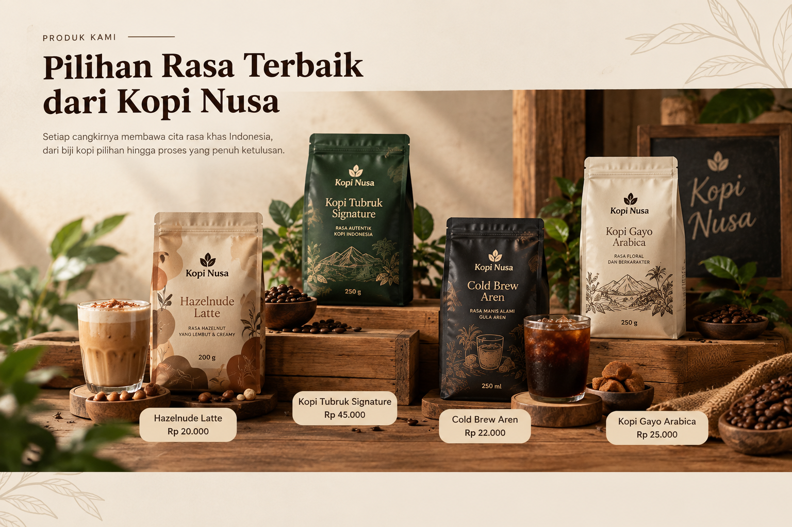

Galeri Kopi Nusa
Lihat lebih dekat suasana Kopi Nusa melalui etalase produk dan proses seduh kopi.


Suasana Kopi Nusa
Dengarkan suasana kedai Kopi Nusa melalui audio berikut.
Lihat lebih dekat suasana Kopi Nusa melalui etalase produk dan proses seduh kopi.

Dengarkan suasana kedai Kopi Nusa melalui audio berikut.